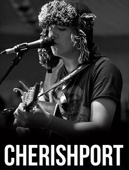

Confirmed Bands & Artists
This Way Up are a promising four-piece located on the Isle of Wight. The release of their debut record, entitled The Game EP, coupled with multiple appearances at Portsmouth Guildhall and Butserfest, has succeeded in establishing the band as one of the South Coast’s up-and-coming indie acts. The record utilises evocative politically and socially motivated lyrics alongside strong harmonies and powerful guitar countermelodies to create anthems which never fail to raise a live audience from their seats. Their latest repertoire promises an exciting fusion of musical styles comprising reinforcing reggae-like beats in addition to a more organic acoustic sound. A recent signing to Rogue Diamond Records, and the opportunity to merchandise their music globally on iTunes, has encouraged the band to broaden their horizons beyond the Island and dedicate their time to meticulously planning a UK Tour in April 2012. The boys are primarily intent on enjoying the music they love to write, record and perform with an aim of making an impact on the nation’s eclectic music scene.
Hailing from the Isle of Wight on England's sunny south coast, The Ohmz have proved a hit with local venues and festival crowds alike with their unique take on reggae and funk. Taking their cues from the likes of Toots & The Maytals, Groundation and Frank Zappa, the band continue to make waves with their heady mix of funky ska/reggae and energetic performances.
"The Ohmz are just so funky, they bring a whole new meaning to the word itself. They not only deliver energy and enthusiasm, but they create such a buzzing atmosphere it's unbelievable. The audience are lapping up this electric funk, dancing around and bobbing their heads to every joint popping beat." - New-Reviews.co.uk
Floella Grace a girl and a ukulele venture from the Isle of Wight to conquer evil, win rupees and play songs!
Waves are a four piece alternative rock band from the Isle of Wight. Since forming in the late summer of 2012, Waves have gone on to play many different and prestigious venues across the south coast of the UK. After finding their feet online and in the local music scene Waves are set to release their debut EP in the spring of 2013

Cherishport has spent the last year taking his local scene by storm with his acoustic set. Originally performing under his own name, before adopting the Pseudonym 'Cherishport', he's been playing almost everywhere he can over the summer, from festival stages to garden parties. He has been gaining the attention of music fans across the south coast with his alternative approach to acoustic guitar. Having released his debut EP in April 2011, and expecting a follow up very shortly, Cherishport is definitely one to watch in the coming months!